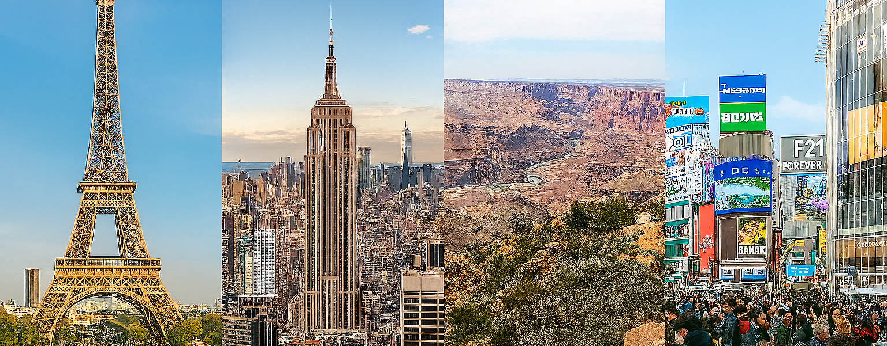
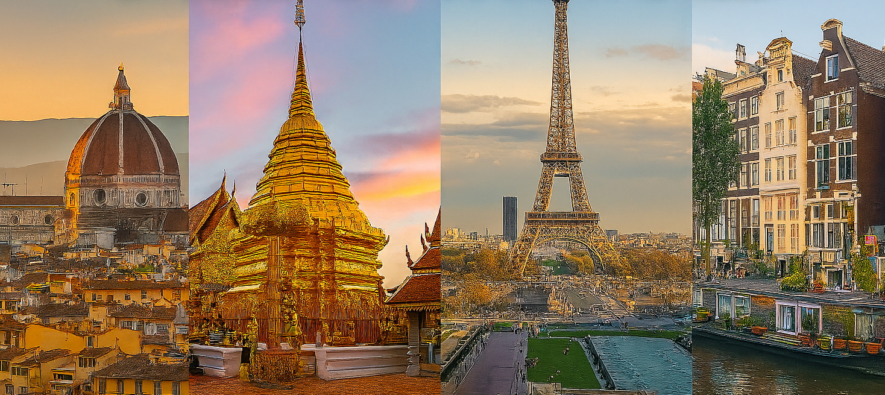

Destinos Destacados en TravelBIRTLH 2025
En TravelBIRTLH 2025 presentamos una selección cuidadosa de los destinos más fascinantes del planeta. Desde metrópolis vibrantes hasta paraísos naturales, cada destino ofrece experiencias únicas que transformarán tu manera de viajar.
Destinos por Continentes
Explora el mundo a través de nuestras categorías especializadas, cada una con ofertas exclusivas y paquetes diseñados para diferentes tipos de viajeros.
Europa - Cultura y Historia
- París, Francia: La ciudad del amor con sus icónicos monumentos como la Torre Eiffel y el Louvre
- Londres, Reino Unido: Mezcla perfecta entre tradición y modernidad, con museos mundialmente famosos
Asia - Tradición y Modernidad
- Tokio, Japón: Metrópolis futurista que conserva sus tradiciones milenarias
- Bangkok, Tailandia: Templos dorados, mercados flotantes y gastronomía exquisita
Comparativa de Destinos Populares
| Destino | Mejor Época | Presupuesto Diario | Días Recomendados | Especialidad |
|---|---|---|---|---|
| París | Abril - Junio | €80 - €150 | 4-6 días | Arte y Cultura |
| Tokio | Marzo - Mayo | €70 - €120 | 5-7 días | Tecnología y Tradición |
| Nueva York | Septiembre - Noviembre | $100 - $200 | 4-6 días | Entretenimiento |
Destinos Emergentes 2025
Descubre lugares que están ganando popularidad entre los viajeros más aventureros:
Tendencias de Viaje 2025
- Turismo Sostenible: Destinos comprometidos con el medio ambiente
- Experiencias Auténticas: Inmersión en culturas locales
- Viajes de Bienestar: Retiros y experiencias de relajación
Destinos por Tipo de Experiencia
Aventura y Naturaleza:
- Patagonia (Argentina/Chile) - Trekking y glaciares
- Nueva Zelanda - Deportes extremos y paisajes únicos
Playas y Relajación:
- Maldivas - Resorts sobre el agua
- Seychelles - Playas vírgenes
Galería de Destinos
